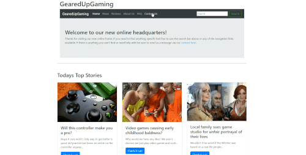
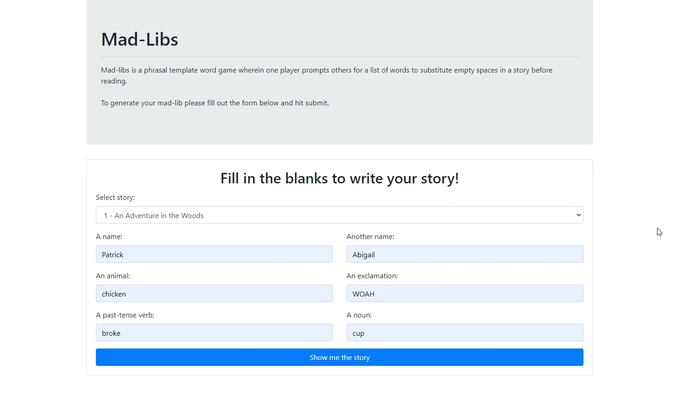
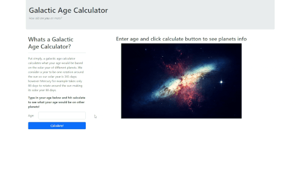
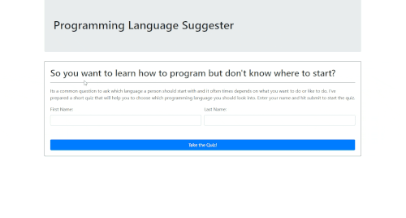

Patrick Dolan Frontend Web Developer
Welcome to my portfolio. Below you will find my work, information on my background and my hobbies.
My Projects

GearedUpGaming Website
GearedUpGaming is a mock news/review website centered on gaming I built when testing out bootstrap and jquery.
Languages/Technology Used:
- HTML
- CSS
- Bootstrap 4.5.3
- JQuery 3.6.0

Mad-libs
A fun little website where you can fill out a form and get back a mad-lib in one of five stories. Coded with Zoe Weinstein.
Languages/Technology Used:
- HTML
- CSS & Bootstrap 4.5.3
- Javascript & jQuery 3.6.0

Galactic Age Calculator
This is the first site/app I built using a modern javascript environment using npm and webpack. It calculates how old the user is based on different planets solar years(revolutions around the sun).
Languages/Technology Used:
- HTML, CSS, & Bootstrap
- Javascript & jQuery
- NPM

Programming Language Suggester
This is a little quiz built largely with jQuery that asks 5 questions and suggests a first programming language to look into based on your answers.
Languages/Technology Used:
- HTML
- CSS & Bootstrap
- Javascript & jQuery

Catfish
This is a tinder-like website for pairing pets for playdates. It includes full CRUD on user profiles and a matching system that favors showing you opportunities to match with pets who have already made a favorable choice when seeing your profile.
This site was a lot of fun to make and very silly in general as it's meant to be used from the perspective of the pet using it not the owner.
Languages/Technology Used:
- HTML & CSS
- C# .NET Core
- JQuery
My First Website
While technically not my first website this is the one I made using Epicodus's tutorials during the course of the class work.
Languages/Technology Used:
- HTML
About Me
Hi I'm Patrick Dolan a software developer in training through Epicodus (a programming bootcamp ran out of Portland Oregon). I love building things and found that software development scratches both that itch and the one that has me reading new technology news all the time. I consider myself a bit of a perpetual student so I'm always looking at new and interesting things both technological and pychological. I'm currently looking for a career change and if after you've had a good look at my qualifications below you want to get in contact with me my email address is: dolanp1992@gmail.com.
Background Information
Why I decided to attend Epicodus
I have a few reasons for joing Epicodus both personal and professional. They can easily be summed up as so:
- I need a career change. I've been working in the gig economy for a few years now and while its been fun and very nice when it comes to free time I want something more stable for my wife and myself to start our family.
- While I'm confident in learning on my own the accountability is nice. Having put up money to complete the program I know I'm not going to get distracted by gig working or other distractions and instead keep my nose in the books so to speak.
- I have family in the industry. My family is already in the software development community and they recommended Epicodus to me as a great way to learn as they had heard good things while working with people from Nike.
Education
Epidocus
Attending Epicodus's C#/React track where I learn a host of technical and soft skills needed to succeed in the the professional software development world.
Technical Skills
- Git
- HTML & CSS
- Javascript
- C#
- React
Soft Skills
- Proper Email Communication
- Job search Techniques
- Career Coaching
- Resume, Cover Letter, and LinkedIn Proile Creation
Clark Community College
Attended the Computer Support Specialists program. This included training on technical subjects as well as communications training with a focus on end user engagement.
Technical Skills
- Computer Hardware and Software Maintenance
- Home and Business Networking Administration
- Help Desk administration
Soft Skills
- End-user engagement training
- Job search Techniques
- Small team communications
Job Experience
Freelance Computer Support
Use various tools to serve customers with quick and efficient PC and network fixes. Jobs vary widely: setting up private networks, replacing computer parts, diagnosing software issues both remotely and locally, etc...
Freelance Artist
Designed and produced art assets for private individuals and small companies. Worked mainly with digital media making avatars, emoticons, and other such assets.
UberEats Driver
Delivered both Fast Food and groceries from stores to consumers.